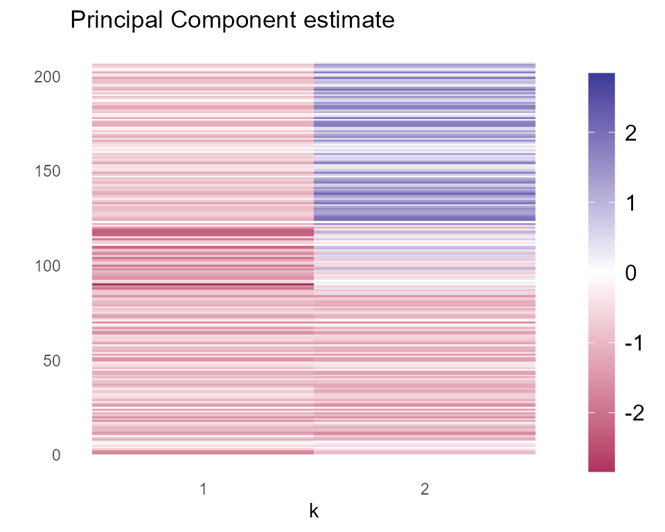
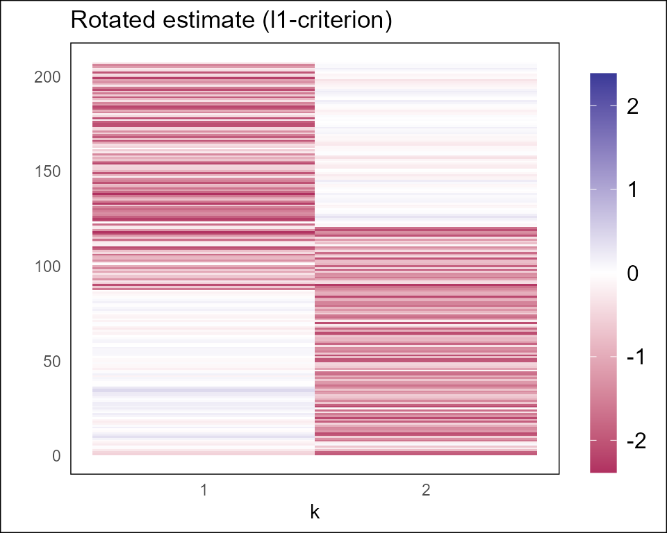
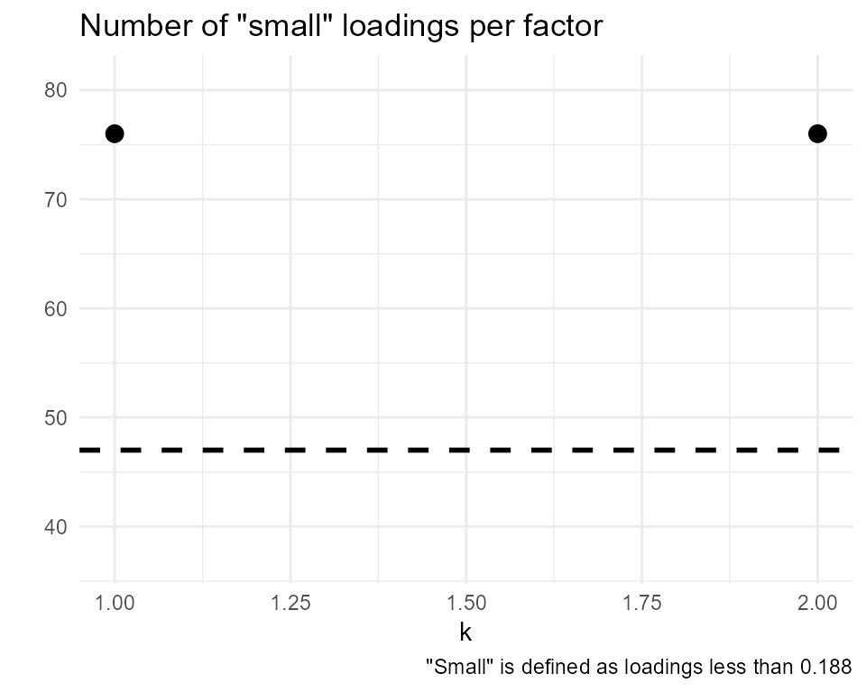

Introduction
The l1rotation package offers functionality to estimate
the loadings matrix in factor models based on the l1-rotation criterion
following Freyaldenhoven
(2025). The key idea of this estimator is assuming a sparsity
pattern in the loadings matrix solves the problem of rotational
indeterminacy inherent to factor models.
Factor models take the form
\[ X = F \Lambda^{*'} + e \] where
\(X\) is a \(T \times n\) data matrix, where there are \(T\) rows and \(n\) variables, or columns
\(F\) is a \(T \times r\) matrix of \(r\) factors that the data is decomposed into
\(\Lambda^{*'}\) is an \(r \times n\) matrix of true loadings
\(e\) is a \(T \times n\) error matrix.
This package is designed to identify and estimate \(\Lambda^{*}\) subject to additional sparsity assumptions detailed in Freyaldenhoven (2025).
Quick start
We will use the example_data data that ships with the
package to show its basic functionality. This data is a matrix
containing numeric information with \(n =
224\), \(T = 207\). In general,
data.frames, tibbles, or other data types can also be used with
l1rotation functions, as long as all columns are numeric.
Note also that the package cannot handle missing values in the data
matrix.
To start, let’s look at the first seven columns of the example data:
head(example_data[,1:7])
#> V1 V2 V3 V4 V5 V6 V7
#> [1,] 2.973310 3.563021 -0.04496568 -0.1700720 0.3350881 0.05244918 -1.1922173
#> [2,] 4.648603 4.817172 0.11200137 -0.5456076 0.1992616 0.33365310 -1.1699467
#> [3,] 4.162014 3.169177 -1.37955943 -2.5864043 -2.9352645 -0.79856910 -1.7227167
#> [4,] 2.097454 0.833101 -2.72023404 -2.9061952 -2.7111563 -0.18925022 -1.5973617
#> [5,] 1.783429 0.364707 -2.24466997 -1.9397028 -0.2521484 1.14563662 -0.6416022
#> [6,] 5.699166 3.932394 0.46050753 -0.5615002 2.3014500 2.22261949 0.5748873We assume that the number of underlying factors can be learned from
the data (following the procedure in Bai
and Ng (2002)). For the example_data we will use two
factors. With just the data, \(X\), and
the number of factors, \(r\), we can
start estimating the loadings with local_factors(). This
function estimates \(\Lambda^{*}\) and
provides helpful diagnostics and figures.
Below is an example using example_data (note that
estimation can also be run in parallel with a selected number of cores,
n_cores):
set.seed(916)
lf <- local_factors(
X = example_data, r = 2,
parallel = FALSE, n_cores = NULL # Runs non-parallel by default
)In the estimation, local_factors() has reasonable
defaults set so the only required arguments are the data you’re
decomposing and the number of factors. We use the principal components
estimator as the initial estimate of the loadings, \(\Lambda_0\), which can be accessed via the
Lambda0 item of the output. The function also computes a
quick diagnostic to check whether local factors are present in the data
which is given in the output item has_local_factors.
Additionally, there are several rotation diagnostics accessible via
rotation_diagnostics which give the rotation matrix, \(R\) that when multiplied by \(\Lambda_0\) produces \(\hat{\Lambda}^*\), the value of the l1 norm
for each vector, and the frequency that each solution appears in the
initial grid of estimates.
lf$rotation_diagnostics
#> $R
#> R
#> V1 0.7011144 0.8388980
#> V2 -0.7130488 0.5442886
#>
#> $fval
#> [1] 145.705 149.850
#>
#> $sol_frequency
#> [1] 259 241For a visual interpretation of this rotation, we provide tile plots
contrasting the initial estimate \(\Lambda_0\), pc_plot and the
rotated estimate, \(\hat{\Lambda}^*\),
rotated_plot.
lf$pc_plot
In the initial principal component estimate, recall that each factor is simply a principal component. Of the 207 variables in \(X\), the first factor loads negatively along the variables between 90 and 120, and slightly negatively almost everywhere else. Along the second factor, there are positive loadings between variables 125 and 200 and slightly negative loadings elsewhere. However, it may be difficult to interpret the relationship between variables and factors when all loadings are nonzero.
lf$rotated_plot
The second estimate is a rotated version of the principal components estimator optimized for sparsity. It will rotate each vector of the principal components loadings matrix until it finds a set of factors that are as sparse as possible. As we can see, the second plot may provide a stronger interpretation as variables 90-200 load negatively on the first factor while variables 0-120 load negatively on the second factor. The loadings along the other variables are close to zero, suggesting no relationship. With this rotation, we can more easily identify which sets of variables are related to which latent factors due to the revealed sparsity pattern.
Refining the details
l1rotation supplies two additional functions,
find_local_factors() and test_local_factors()
which provide additional functionality to support the main
local_factors() function.
find_local_factors()
This function has an additional argument, Lambda0, that
allows the user to specify any orthonormal basis of the loadings rather
than defaulting to the principal component estimator. Here are some
plausible alternative initial estimates:
MLE estimation
Sparse Orthogonal Factor Regression (SOFAR) as in Uematsu et al. (2019).
test_local_factors()
This function tests for the presence of local factors given an
estimate of the loadings matrix, Lambda. Since the results
in this package rely upon a sparsity pattern in the true loadings
matrix, test_local_factors() provides a simple diagnostic
to check this assumption.
For a given loading matrix estimate, \(\hat{\Lambda}\), we can consider maximizing across factors the number of individual loadings in \(\hat{\Lambda}\) smaller than some threshold \(h_n\). This gives us an idea of how many “small” loadings there are in \(\hat{\Lambda}\):
\[ \mathcal{L(\hat{\Lambda})} = \max_k\left(\sum_{i=1}^n 1\{\hat{|\lambda}_{ik}| < h_n \}\right) \] With this number, we can then check whether the number of “small” loadings is larger than \(\gamma n\)
\[ \texttt{has_local_factors} = 1\{\mathcal{L}(\hat{\Lambda}) \geq \gamma n \}. \]
Returning to our lf results, we can take a look at the
value of has_local_factors.
lf$has_local_factors
#> [1] TRUEThis value is the result of test_local_factors(). To
verify, we can call test_local_factors() on two different
estimates: the principal components estimate, Lambda0, and
the l1rotation estimate, Lambda.
# Check for local factors in PC estimate...
test_pc_estimate <- test_local_factors(X = example_data, r = 2, loadings = lf$initial_loadings)
# And rotated estimate
test_rot_estimate <- test_local_factors(X = example_data, r = 2, loadings = lf$rotated_loadings)
test_pc_estimate$has_local_factors
#> [1] FALSE
test_rot_estimate$has_local_factors
#> [1] TRUEThis confirms that no local factors are detected in the principal components estimate (no sparsity pattern is observed), and that local factors are present in the rotated estimate.
- Note that rotating the initial estimate, optimizing for sparsity, is not guaranteed to produce a sparse loadings matrix if the true loadings matrix itself is not sparse. However, if a sparsity pattern does exist in the true loadings matrix, this procedure will recover it.
round_hn <- round(test_rot_estimate$h_n, digits = 3)
lf$small_loadings_plot +
ggplot2::labs(
title = 'Number of "small" loadings per factor',
caption = paste('"Small" is defined as loadings less than', round_hn)
)
Finally, given the testing plot above, we can conclude that factors 1
and 2 are likely local since they have enough “small” loadings (i.e.,
smaller than a value of \(h_n = 1/\log(n)
=\) 0.188 in the example_data).